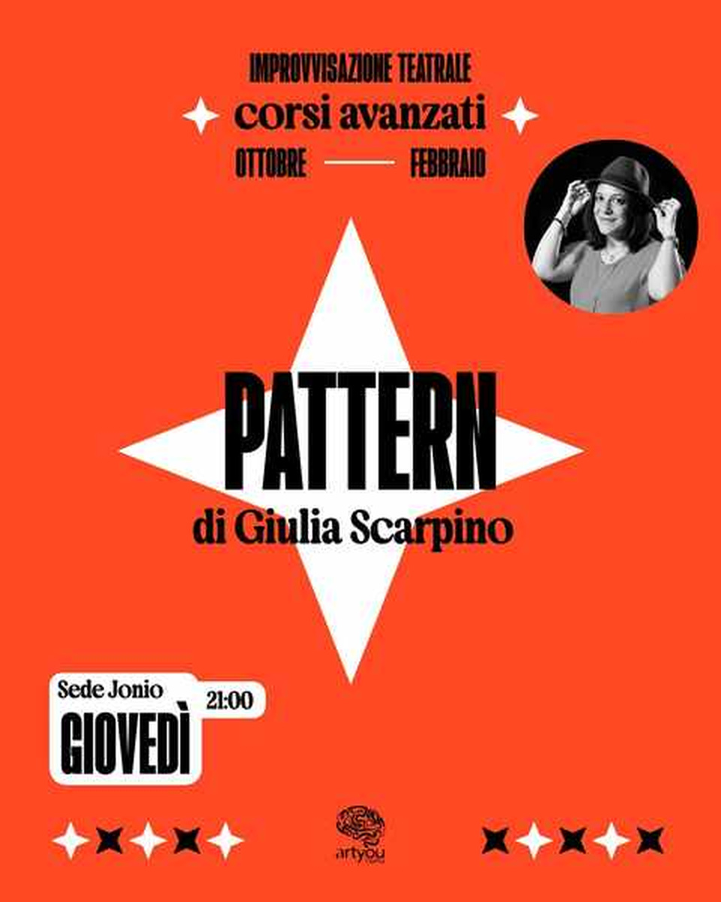
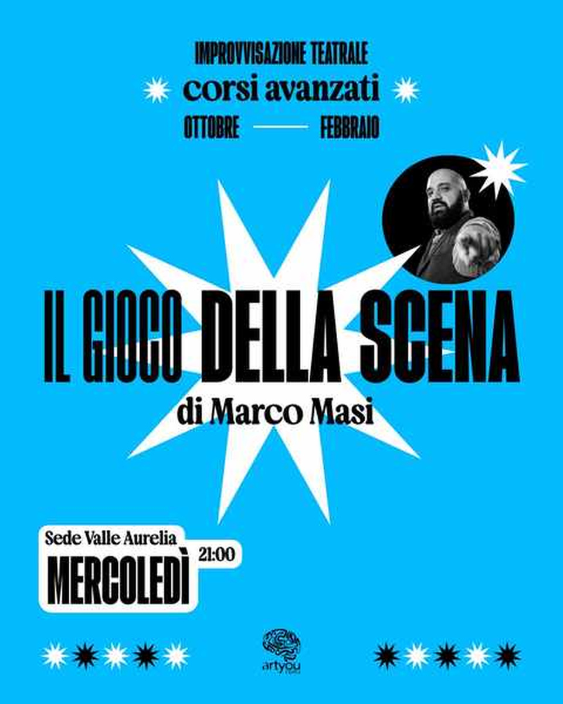
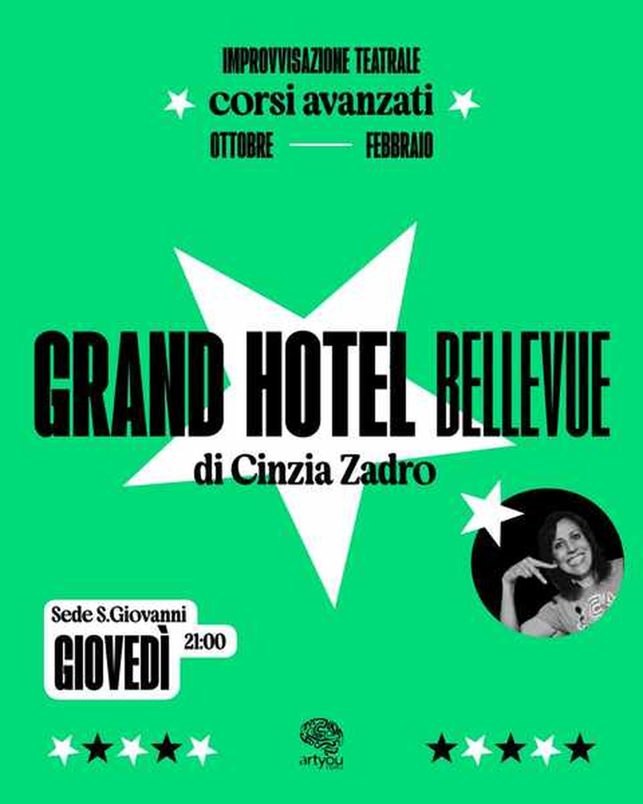
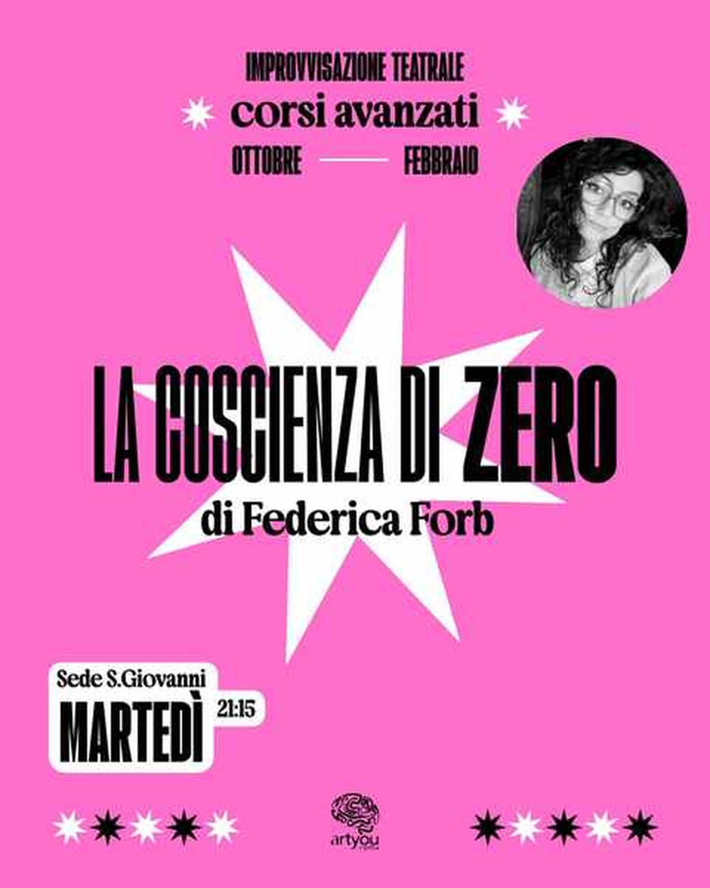
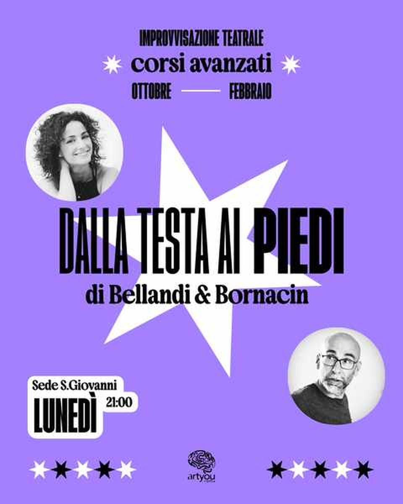

Ascolta
La scena nasce da ciò che fanno e dicono gli altri. L'ascolto diventa il primo strumento dell'improvvisatore.
Corsi
Un triennio per imparare a stare in scena senza copione, poi i corsi Amatori per chi vuole andare oltre. E per i più giovani, Artyou Young.
Forme di improvvisazione accompagnano il teatro da secoli e trovano uno sviluppo fondamentale nella Commedia dell'Arte italiana. Nel Novecento la disciplina evolve soprattutto negli Stati Uniti e in Canada; in Italia si diffonde in modo significativo dagli anni Novanta, con scuole, compagnie, spettacoli e festival dedicati.
L'improvvisazione può aiutare a sentirsi più sicuri nel parlare in pubblico, gestire l'imprevisto, riconoscere le emozioni e rispondere senza bloccarsi. Si allenano presenza, spontaneità e fiducia nelle proprie intuizioni.
Comoda per Re di Roma, Appio Latino, Tuscolano e centro.
Per il quadrante nord, Montesacro, Talenti e Nomentana.
Facile da raggiungere da Prati, Baldo degli Ubaldi, Cornelia e Vaticano.
I corsi base
La formazione di Artyou è organizzata in tre anni: alla fine si riceve un attestato e si entra nell’officina degli improvvisatori e delle improvvisatrici avanzati, che lavorano su progetti quadrimestrali.
Iniziare non è vincolante: si può frequentare anche un solo anno, acquisendo alcuni strumenti, oppure rinnovare di anno in anno la scelta di proseguire.
A fine anno è previsto uno spettacolo; dal terzo anno anche dopo il primo quadrimestre.
I corsi partono a settembre-ottobre, con un nuovo corso anche a gennaio. La prima lezione è gratuita.
Corsi Amatori · per avanzati
Per chi ha finito il terzo anno di improvvisazione in qualsiasi scuola d’Italia o del mondo: laboratori di 4 mesi su stili, tecniche o autori, con docenti Artyou ed esterni. Ogni laboratorio si chiude con uno spettacolo.
I laboratori 2026/27 vanno da ottobre a febbraio; i successivi da febbraio a giugno 2027. Puoi seguirne uno solo o restare con noi tutto l’anno.

Pattern è un termine inglese che indica la ripetizione di una determinata sequenza. Nell’improvvisazione, il pattern è la ripetizione di ciò che ascolto: se il mio compagno fa lo stesso, senza aggiungere o togliere nulla, reagendo momento per momento a ciò che accade nel qui e ora, allora non userò più la mente. Il pattern si interrompe solo quando accade qualcosa che provoca negli attori una reazione emotiva genuina.
Uno studio per sperimentare le ripetizioni in tutte le loro forme, in chiave registica e narrativa, comica e drammatica. Pattern è un gioco di ritmo e di squadra: come un grande domino in cui ogni pezzo ha un’importanza fondamentale.

Dopo il grande successo dello scorso anno, torna a grande richiesta il percorso di Marco Masi sul gioco della scena. Che cos’è? Come si trova? Come si gioca? Come si creano dal nulla scene divertenti, che in realtà sono già lì e aspettano solo di essere scoperte?
Alla fine del laboratorio saprete rispondere a queste domande, e il gioco della scena non avrà più segreti. Michelangelo diceva che la scultura è già dentro il blocco di marmo: basta togliere il superfluo. In questo corso proveremo a togliere il di più e a mostrare il capolavoro che si nasconde sotto.

Benvenuti al Grand Hotel Bellevue, dove il servizio offre molto più della solita colazione: in ogni stanza c’è un’atmosfera diversa. I clienti si ritroveranno ad abitare i sospiri di una stanza romantica, a districarsi tra le indagini serrate di una stanza poliziesca e… attenzione alla stanza con il vecchio ritratto, perché ha un inconfondibile sapore horror.
E poi ci sono gli spazi comuni: cosa succede quando personaggi di mondi così lontani si ritrovano in fila per il buffet? Si incontreranno, si scontreranno e si fraintenderanno davanti al caffè della colazione o sotto lo sguardo vigile del portiere, dando vita a un vibrante crocevia di storie.

Un corso autoriale che porta in scena, in un format improvvisato, lo stile e le dinamiche delle serie firmate Zerocalcare: quella modalità scanzonata ma incredibilmente profonda, autentica e divertente che ci ha inchiodato tutti e tutte davanti allo schermo e ci resta dentro anche a tv spenta.
Testimonianza di una generazione cresciuta troppo in fretta ma ancorata a un’adolescenza che forse non andrà mai via del tutto. Si lavorerà su personaggi, relazioni e narrazione ispirati all’inconfondibile firma del fumettista romano. Insomma, si ride molto e si piange, tra un «mortacci tua» e uno sguardo dritto negli occhi a ciò che si muove dentro di noi.

Il nostro corpo è il nostro primo strumento: unico, irripetibile e custode della nostra storia. Ma al pubblico non interessa chi siamo noi, bensì il personaggio e la storia che racconta. In questo percorso impareremo a mettere la nostra unicità al servizio della scena, lavorando sulla coerenza tra gesto e parola, corpo e voce, postura ed emozione.
Il movimento scenico nasce dalla consapevolezza del proprio corpo: il pubblico prima ci vede e poi ci ascolta. Con un intenso lavoro fisico e vocale, la maschera neutra e il combattimento scenico costruiremo una presenza scenica solida e autentica. Perché per fare voli pindarici serve sempre una struttura da cui prendere slancio.
Artyou Young
L’improvvisazione non è solo per i grandi. Sui più piccoli ha un impatto pedagogico enorme: insegna a credere in se stessi, a non avere paura di sbagliare, sviluppa empatia e collaborazione. Ed è una porta verso il mondo della fantasia.
Classi per età, dai 7 anni in su: un’ora con i nostri insegnanti e tanti compagni di corso, tra giochi, esercizi e creatività.
Dai ai tuoi ragazzi l’occasione di crescere con il teatro e l’improvvisazione, sviluppare sicurezza e fare nuove amicizie.
Contatta il responsabile: Francesco Di Nardo · +39 329 366 1178